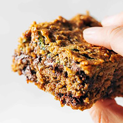
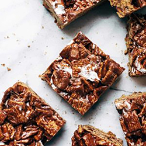
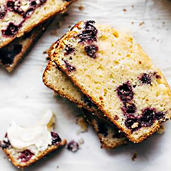

Desserts Recipes
We're not eating dinner just to get to dessert and we're certainly not having dessert FOR dinner but, like, just in case...here are some ideas!
01. Almond Butter Chocolate Chip Zucchini Bars
These Almond Butter Chocolate Chip Zucchini Bars are wholesome and perfect and just everything your summer needs! Made with oats, almond butter, zucchini, dates, and maple syrup. So many feel-good ingredients packed into one bar!
Click here for the recipe02. Golden Grahams Bars
Crunchy, chocolatey, and made with just FIVE ingredients. Even better: it's no-bake a super easy to make. Winning!
Click here for the recipe03. Pistachio Loaf

It's nearly springtime and we're making this beautiful Pistachio Loaf! Grab your baking essentials - like butter, eggs, and sugar - plus a few extras, like pistachios and coconut flour, and get baking!
Click here for the recipe04. Lemon Poppyseed Zucchini Bread
Lemon Olive Oil Cake with zucchini, brown sugar, zested lemons, olive oil, ginger, and poppyseeds. The most healing breakfast or snack!
Click here for the recipe